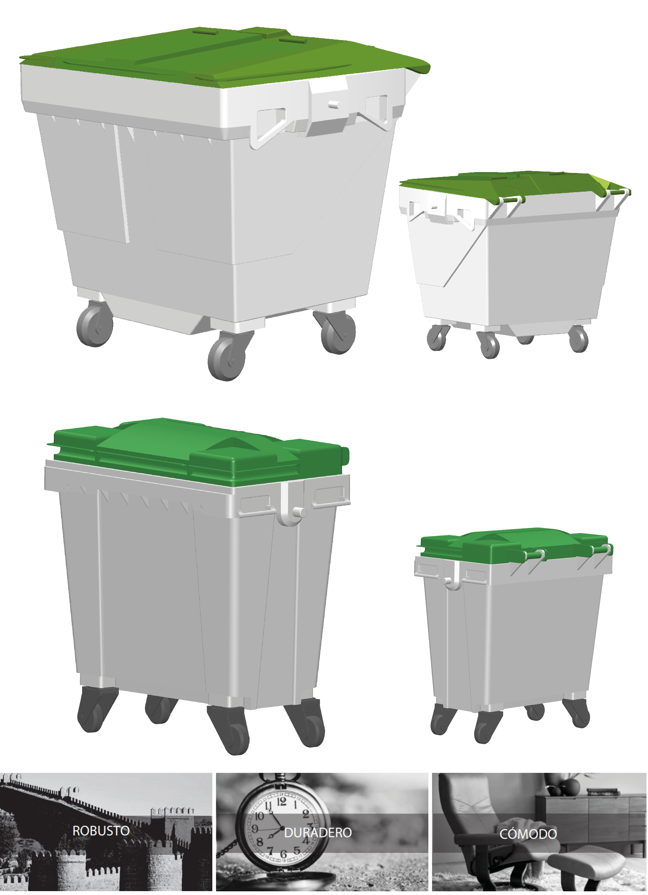
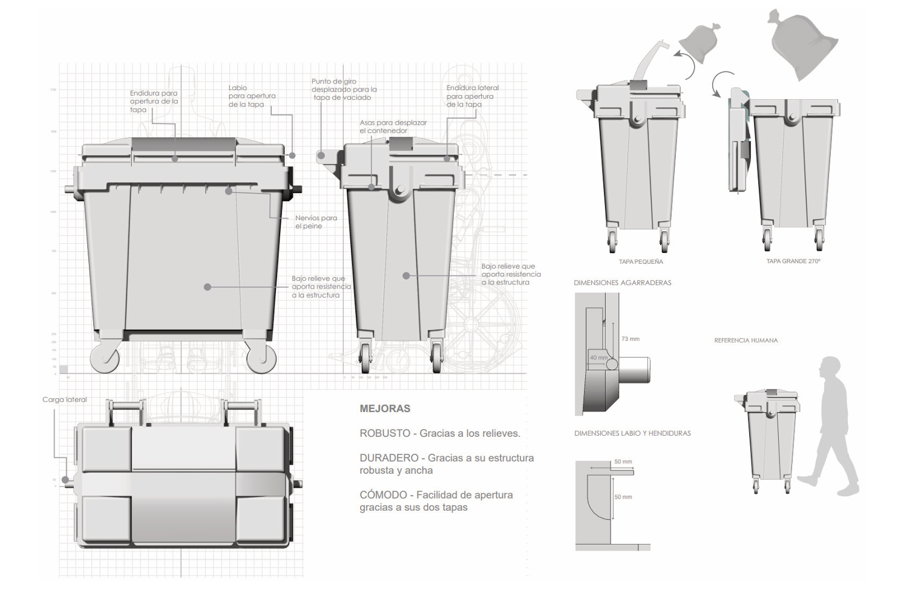
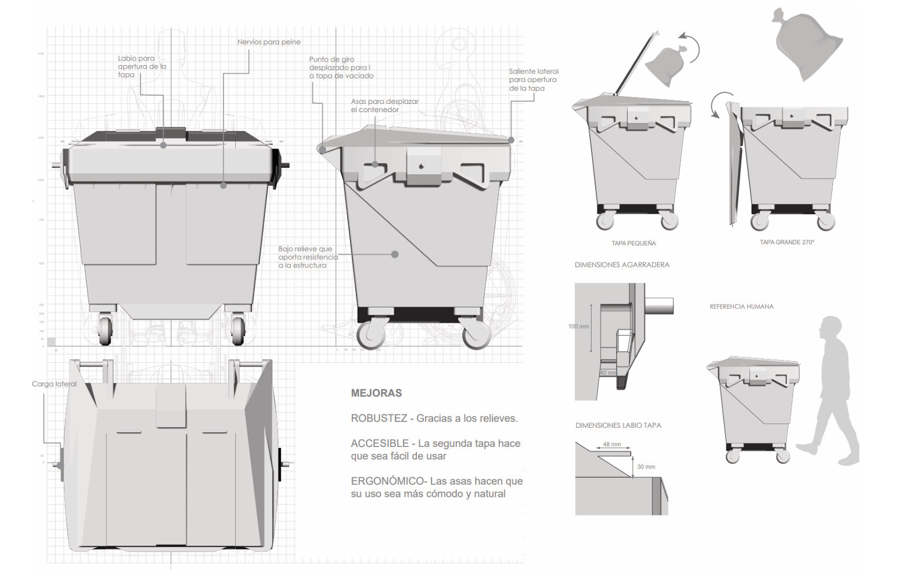
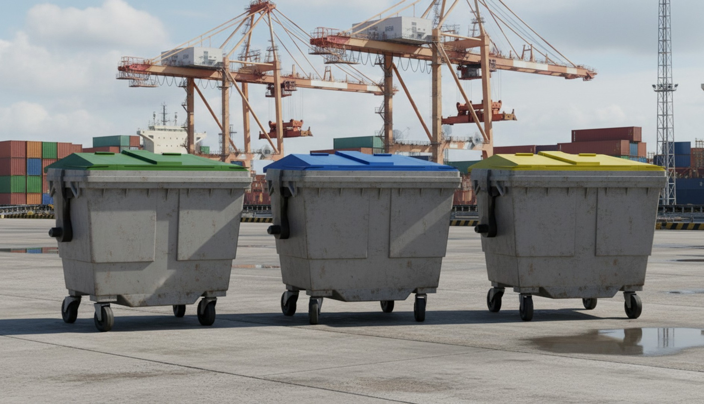

Rear-Load
Containers
800/1100L
Project Brief
Design new concepts for rear-load containers of 800 and 1100 litre capacity, in collaboration with FrutoDS and Formato Verde — companies specialising in urban waste management solutions for local councils.
What? New rear-loading container concepts. Who? Urban planning departments and city councils. How? Plastic — injection moulding and rotomoulding. Where? High-demand public areas.
Design Rationale
The container features a dual-lid system: one for operator emptying and one partial-opening lid for users to deposit waste. The surface reliefs provide structural rigidity. The lateral handles are slightly angled for improved ergonomics, making manipulation easier for waste operators.
Three core design values guided the concept: Robusto (robustness for outdoor use), Duradero (longevity through smart material and surface treatment), and Cómodo (comfort for both end users and waste operators).
Colour Strategy
The container family was designed to adapt to sorting systems through colour-coded lid variants — green for organic, blue for paper/cardboard, and yellow for plastic/metal — allowing flexible deployment across different municipal contexts.
Technical Output
Deliverables included: orthographic technical drawings, 3D model in Solidworks and Rhinoceros, rendered views in multiple colour variants, life-size proportional mock-up studies, and presentation panels.

Final panels


